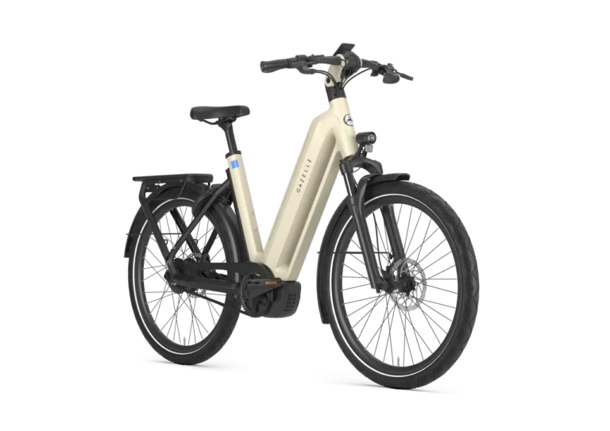

Gazelle Eclipse C380
De nieuwe Gazelle Eclipse C380.. Tijdens het ontwikkelen van de Eclipse hadden ze bij Gazelle maar één doel: De consument een e-bike bieden waarmee je iedere uitdaging aan kunt. Het rijden op een Eclipse is namelijk één groot avontuur! Lange tochten door de natuur met steile hellingen onderweg? Geen probleem voor de Eclipse. Om te beginnen is de Eclipse C380 uitgerust met een kunststof riem waardoor deze e-bike nagenog onderhoudsvrij is. Door de traploze Enviolo versnellingsnaaf zit je altijd in de juiste versnelling De Eclipse is voorzien van krachtige en goed doseerbare schijfremmen. De stuurpen van de Eclipse is enorm robuust en stijf. Hierdoor stuurt een Eclipse strak en sportief. Door d
Prijs, voorraad, kleur en maat kunnen wijzigen. Vraag Tieks naar de actuele uitvoering voordat u langskomt.
Kom proefrijden.
Een fiets kiest u niet alleen op specificaties. Kom langs om de fiets te bekijken en vraag naar de beschikbare maat en uitvoering.
Bezoek Tieks